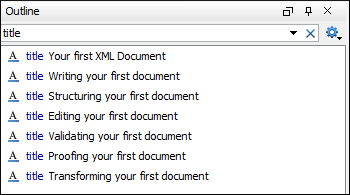

Your First XML Document
To create your first XML document, select File >  New or click the New button on the toolbar. The New document wizard is
displayed:
New or click the New button on the toolbar. The New document wizard is
displayed:
You can either create a new XML document from scratch by choosing one of the available types in the wizard. You can also create one from a template by choosing a template from the Global templates or Framework templates folders. If you are looking for a common document type, such as DITA or DocBook, you can find templates for these document types in the Framework templates folder. If your company has created its own templates, you can also find them there. After you use this dialog box to create a few documents, those document types will appear in the Recently used folder, which allows you to easily create other new documents of those types.
For some document types, you may find a lot of different templates. For example, there are numerous templates for DocBook documents, and DITA topic types and maps. Choose the template that best meets your needs.
Writing Your First Document
Depending on the type of document you choose, the Oxygen XML Editor interface changes to support editing that document type. This may include new menus, toolbar buttons, and items in the contextual menus.
Also, depending on the type of document you choose, Oxygen XML Editor may open your document in Text or Author mode. Text mode shows the raw XML source file, while Author mode shows a graphical view of the document.
The availability of Author mode for your document type depends on the type you choose and if there is a CSS stylesheet available to create the Author mode. Oxygen XML Editor includes default Author mode views for most of the document types it supports. If your company has created its own document types, Author mode stylesheets may have also been created for that type. However, if you create a plain XML file, or one based on a schema that is not included in the Oxygen XML Editor built-in support, you need to edit it in Text mode or create your own Author mode CSS for it.
You can switch back and forth between Author mode and Text mode at any time by clicking the buttons at the bottom left of the editor window. You do not lose any formatting when switching from Author to Text mode. Text and Author modes are just different views for the same XML document.
There is also a Grid mode available that displays all content in an XML document as a structured grid of nested tables. This is useful for certain kinds of documents, particularly those that are structured like databases. You can also use it when you want to display XML content in a table-like manner (for example, if you need to extract XML content to a spreadsheet).
If you use Author mode, you might find that it is similar to word processors that you are used to. Likewise, the Text mode is similar to many other typical text editors. If you are new to XML, the biggest difference is that XML documents have a particular structure that you have to follow. Oxygen XML Editor assists you with a continuous validation of the XML markup.
Structuring Your First Document
Each XML document type has a particular structure that you have to follow as you write and edit the document. Some document types give you a lot of choices, while others give you very few. In either case, you need to make sure that your document follows the particular structure for the document type you are creating. This means:
- At any given location in the document, there are only certain XML elements allowed. Oxygen XML Editor helps you determine which elements are allowed. In Author mode, when you press Enter, Oxygen XML Editor assumes that you want to enter a new element and shows you a list of elements that can be created in this location. Keep typing until the element you want is highlighted and press Enter to insert the element. If you want to view the overall structure of a document and see what is allowed (and where), you can use the Model view ().
- When you create certain elements, you may find that your text gets a jagged red underline and you get a warning that your content is invalid. This is usually because the element you have just created requires certain other elements inside of it. Your document will be invalid until you create those elements. Oxygen XML Editor helps you with this. If there is only one possible element that can go inside the element you just created, Oxygen XML Editor creates it for you. However, if there is more than one possibility, you have to create the appropriate elements yourself. In many cases, Oxygen XML Editor presents XML Quick Fixes that help you resolve errors by offering proposals to quickly fix problems such as missing required attributes or invalid elements.
Editing Your First Document
Once you have completed the first draft of your document, you may need to edit it. As with any editor, Oxygen XML Editor provides the normal cut, copy, and paste options as well as drag and drop editing. However, when you are editing an XML document, you have to make sure that your edits respect the structure of the XML document type. In fact, you are often editing the structure as well as the content of your document.
Oxygen XML Editor provides many tools to help you edit your structure and to keep your structure valid while editing text.
- The Document Breadcrumbs
-
Across the top of the editor window, there is a set of breadcrumbs that shows you exactly where the insertion point is in the structure of the document. You can click any element in the breadcrumbs to select that entire element in the document.

- Showing Tags
- To see exactly where you are in the structure of the document, you can show the tags
graphically in the Author view. There are several levels of tag
visibility that you can choose using the
 Tags Display Mode
drop-down menu on the toolbar (the button may look a little different than
this, as it changes to reflect the level of tags currently displayed).
Tags Display Mode
drop-down menu on the toolbar (the button may look a little different than
this, as it changes to reflect the level of tags currently displayed). - Outline View
-
The Outline view shows you the structure of your document in outline format. You can use it to select elements, or to move elements around in the document.
Figure 2. Outline View 
You can configure the Outline view to determine what is shown, such as element names, attributes, and comments. Certain choices may work better for particular document types. You can also filter the Outline view to show only elements with a certain name.
Figure 3. Outline View Filtered to only Show Element Names  - Cut and Paste, Drag and Drop
-
You can cut and paste or drag and drop text, just as you would in any other editor. However, when you do this in Author view, it is important to remember that you are actually moving blocks of XML. When you cut and paste or drag and drop a block of XML, the result has to be valid both where the content is inserted, and where it is removed from.
A big part of doing this correctly is to make sure that you pick up the right block of text in the first place. Using the breadcrumbs or Outline view, or showing tags and using them to select content, can help ensure that you are selecting the right chunk of XML.
If you do try to paste or drop a chunk of XML somewhere that is not valid, Oxygen XML Editor warns you and tries to suggest actions that make it valid (such as by removing surrounding elements from the chunk you are moving, by creating a new element at the destination, or by inserting it in a nearby location).
If you are using Author mode, you can also switch to Text mode to see exactly which bits of XML you are selecting and moving.
- Refactoring actions
- You can perform many common structure edits, such as renaming an element or wrapping text in an element, using the actions in the Refactoring menu of the contextual menu (or the menu). More advanced refactoring operations are also available using the XML Refactoring tool that is available in the Tools menu.
Validating Your First Document
Validation is the process of making sure that an XML document abides by the rules of its schema. If Oxygen XML Editor knows how to find the schema, it validates the document for you as you type. Oxygen XML Editor finds the schema automatically for most of the document types created from templates. However, in some cases, you may have to tell it how to find the schema.
When Oxygen XML Editor validates as you type, there is a small bar at the right edge of the editor that shows you if the document is invalid and where errors are found. If the indicator at the top of that bar is green, your document is valid. If the document is invalid, the indicator turns red and a red flag shows you where the errors are found. Click that flag to jump to the error. Remember that sometimes your document is invalid simply because the structure you are creating is not yet complete.
In addition to problems with the validity of the XML document itself, Oxygen XML Editor also reports warnings for a number of conditions, such as if your document contains a cross reference that cannot be resolved, or if Oxygen XML Editor cannot find the schema specified by the document. The location of these warnings is marked in yellow on the validation bar. If the document contains warnings, but no errors, the validity indicator turns yellow.
 Validate action from the
Validate action from the
 Validation toolbar drop-down menu or the menu. When you validate in this manner, if errors are found, the
validation result opens in a new pane at the bottom of the editor that shows each validation
error on a separate line. Clicking the error takes you to the location in your document
where the error was detected.
Validation toolbar drop-down menu or the menu. When you validate in this manner, if errors are found, the
validation result opens in a new pane at the bottom of the editor that shows each validation
error on a separate line. Clicking the error takes you to the location in your document
where the error was detected.Proofing Your First Document
Oxygen XML Editor includes an automatic (as-you-type) spell
checking feature, as well as a manual spell checking action. To check the spelling
of your document manually, use the  Check Spelling action on the toolbar or from the Edit menu.
Check Spelling action on the toolbar or from the Edit menu.
Transforming Your First Document
An XML document must be transformed to be published. Transformations are specific to the particular type of document you have created. For example, a DITA transformation cannot be used on a DocBook file, or vice versa. A single document type may have many multiple transformations that produce different kinds of outputs. For some document types, such a DITA, many different content files may be combined together by a transformation. You need to locate and launch a transformation that is appropriate for your document type and the kind of output you want to generate.
Oxygen XML Editor uses transformation scenarios to control the transformation process. Depending on the document type you have created, there may be several transformation scenarios already configured for your use. This may include the default transformation scenarios supplied by Oxygen XML Editor or ones created by your organization.
To see the list of transformations available for your document, select the
 Apply
Transformation Scenario(s) action from the toolbar or the menu. A list of available transformation scenarios is displayed. Choose
one or more scenarios to apply, and click Apply associated. Exactly
how your transformed content appears depends on how the transformation scenario is
configured.
Apply
Transformation Scenario(s) action from the toolbar or the menu. A list of available transformation scenarios is displayed. Choose
one or more scenarios to apply, and click Apply associated. Exactly
how your transformed content appears depends on how the transformation scenario is
configured.